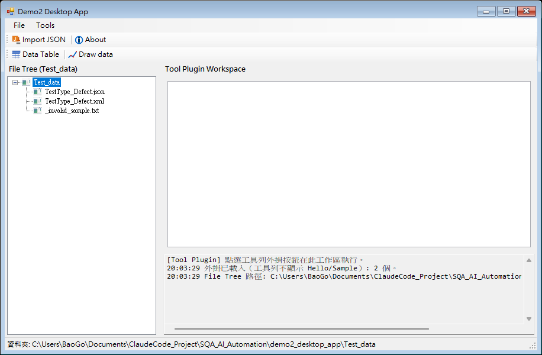
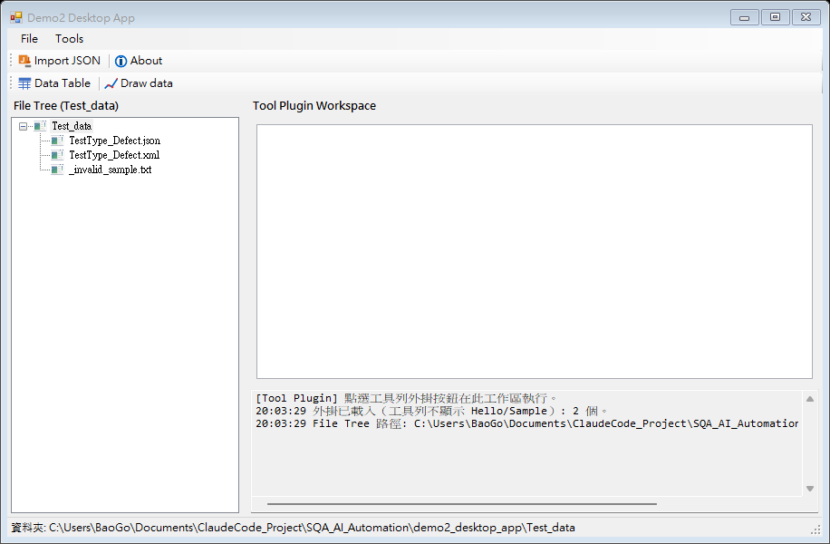
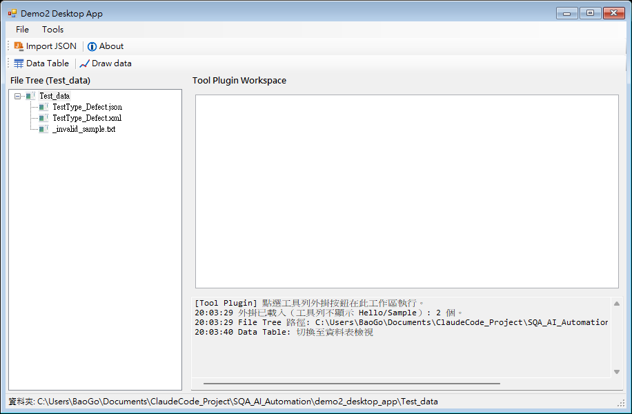
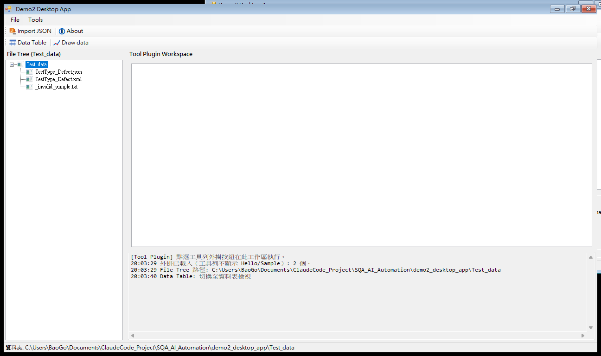

概述
Demo2 Desktop App 為 WinForms 桌面程式，工作區根目錄預設為 Test_data。左側為檔案樹，右側為工具工作區（資料表 / 曲線圖）與日誌區。
主要流程：匯入 JSON → 檢視 Data Table → Draw data 繪製 Test Type / Defect 曲線圖。
軟體操作介面截圖
以下為 Demo2 Desktop App 實際執行畫面（截圖存放於 manual_images/）。


Import JSON（Ctrl+I）後，於檔案對話框選擇 TestType_Defect.json，資料會複製至 Test_data 並載入資料表。

Data Table（Ctrl+E）切換至資料表檢視；上方白區為 DataGrid，下方日誌顯示「Data Table: 切換至資料表檢視」。

Draw data（Ctrl+D）切換至圖表檢視；需先載入含 Test Type / Defect Number 的 JSON 資料，才會顯示曲線圖。
重新產生截圖
若介面更新後需更新圖片，請在專案根目錄執行：
powershell -ExecutionPolicy Bypass -File capture_manual_screenshots.ps1
快速開始
步驟 1：建置
build.bat
產出 Demo2Desktop\bin\Debug\Demo2Desktop.exe
步驟 2：啟動
run.bat
若尚未建置會自動呼叫 build.bat，並複製 Test_data（含 .json / .xlsx）至執行目錄。
步驟 3：匯入資料
工具列 Import JSON（Ctrl+I），選擇 Test_data\TestType_Defect.json。
批次檔一覽
| 檔案 | 用途 |
|---|---|
build.bat | 建置 Demo2Desktop.sln（.NET 3.5） |
run.bat | 啟動 Demo2Desktop.exe |
開啟操作app說明書.bat | 以系統預設瀏覽器開啟本說明書（HTML） |
工具列
Toolbar 0
| 按鈕 | AutomationId | 快捷鍵 | 說明 |
|---|---|---|---|
| Import JSON | btnToolbar0ImportExcel | Ctrl+I | 匯入 JSON 至 Test_data |
| About | btnToolbar0About | 關於 Demo2 Desktop |
Toolbar 1
| 按鈕 | AutomationId | 快捷鍵 | 說明 |
|---|---|---|---|
| Data Table | btnToolbar1OpenExcel | Ctrl+E | 切換至資料表檢視 |
| Draw data | btnToolbar2DrawData | Ctrl+D | 曲線圖（X=Test Type, Y=Defect） |
工作區與檔案樹
treeFiles— 左側檔案樹，雙擊 .json / .xlsx 可載入dataGridExcel— 資料表pictureBoxChart— 曲線圖txtToolLog— 日誌區
預設 Test_data：demo2_desktop_app\Test_data
JSON 格式
{
"source": "X.xlsx",
"Record": [
{ "No": 1, "TestType": "Test1", "DefectNumber": 83811 },
{ "No": 2, "TestType": "Test2", "DefectNumber": 14593 }
]
}
樣本：Test_data\TestType_Defect.json（Test1～Test20）
Draw data 曲線圖
需 Test Type 與 Defect Number 欄位。X 軸 = Test Type，Y 軸 = Defect Number。
建議先 Import JSON 或雙擊 JSON 檔載入資料。
測試資料目錄
| 檔案 | 說明 |
|---|---|
TestType_Defect.json | JSON 匯入樣本 |
TestType_Defect.xml | XML 對照檔 |
X.xlsx | Excel 備用樣本 |
操作app說明書.xml | 結構化說明原始檔 |
操作app說明書.html | 瀏覽器顯示用說明書 |
疑難排解
Import JSON 失敗
- 確認副檔名為 .json，內容含 Record 陣列
- 檔案已在 Test_data 內時會直接載入
- 重新執行 build.bat 後再 run.bat
開啟操作app說明書.bat 無法顯示
- 請確認同目錄存在
操作app說明書.html - 本 bat 開啟 HTML（非 XML），避免瀏覽器 XSLT 限制
- 可直接雙擊
操作app說明書.html
建置失敗：exe 被占用
- 關閉 Demo2Desktop.exe 後再 build.bat